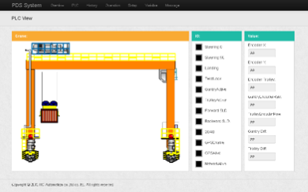
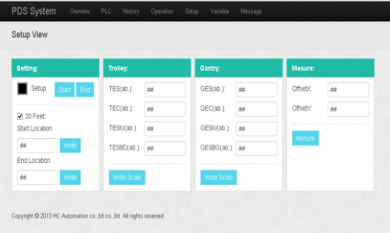

集装箱码头智能定位系统（PDS)
通过智能定位系统，可以自动检查轮胎吊的作业 箱位和指令箱位是否符合，且对所有作业箱位进行纪 录，并将其传送给码头操作系统，以避免作业错误， 提高整体操作效率，减少倒箱率。
 - 无需外部信号输入，可以仅仅通过大车 / 小车编 码器以及必要的 PLC 信号完成基本功能。
- 可以依靠 GPS/ 激光等额外的检测模块作位置复 位与验证。提高准确性和可靠性，任何一个定位方 式故障时，仍可维持准确性相当长的时间。
- 兼容多种硬件和上层操作系统。无论何种品牌的 GPS、编码器、激光测距仪或者上层操作系统，均 可与我司 PDS 系统兼容。
- 独特的动态码头地图设计，支持所有类型的堆场， 包括冷藏箱、普通重箱，20 尺、40 尺和 45 尺集 装箱堆场，也可以自定义任何堆场形状或布局。
- 兼容多种码头操作系统（如 ngen 等）。
- 完整的地图升级、共享、维护功能。